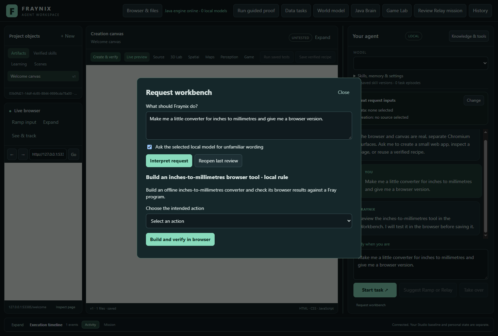
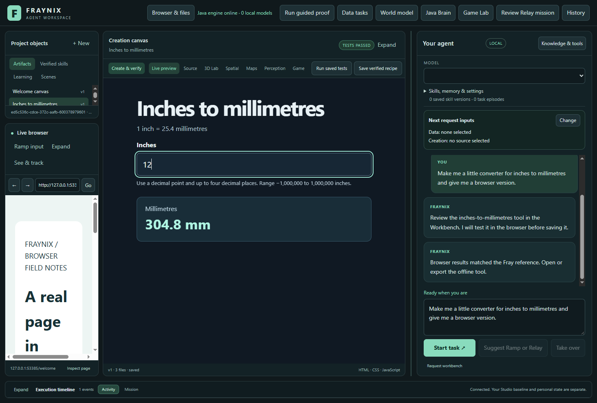

A verified Fray browser tool from chat
Ask for an inches-to-millimetres browser tool in Chat. Fraynix offers a review, then checks the offline HTML tool in Chromium against the Java reference from the existing Fray compiler.

The real Chat request awaiting approval

The verified converter showing 12 inches as 304.8 mm
System files
Open source